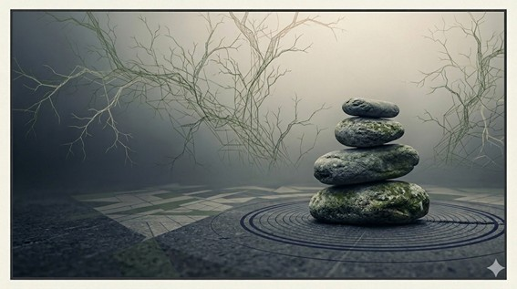
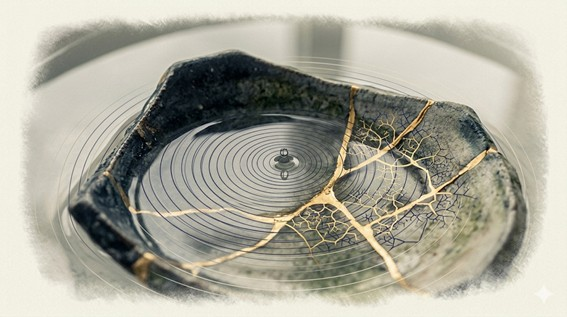
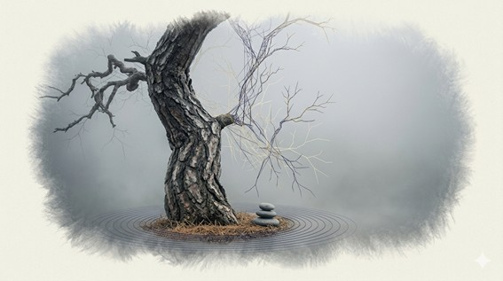

Sencillez
La práctica comienza en lo inmediato: sentarse, respirar, observar. No se trata de alcanzar un estado especial, sino de dejar de añadir dramatismo, rigidez o huida a lo que ya está ocurriendo.
Zaike Zen está pensado para personas que sienten curiosidad por la meditación y buscan una forma de practicarla de manera sencilla, honesta y profunda. No propone una huida del mundo, sino una forma de habitarlo con más presencia, con más claridad y con una relación menos rígida con uno mismo y con la realidad.

En Zaike Zen, el zen no se presenta como una doctrina cerrada, sino como una práctica de experiencia directa. Parte de una intuición sencilla y profunda: nada permanece por sí mismo, nada está aislado, y buena parte de nuestro sufrimiento tiene que ver con el intento de fijar lo que en realidad está cambiando. Comprender esto no es un ejercicio abstracto, sino una forma de vivir con más lucidez.
La práctica comienza en lo inmediato: sentarse, respirar, observar. No se trata de alcanzar un estado especial, sino de dejar de añadir dramatismo, rigidez o huida a lo que ya está ocurriendo.
Estar presente no significa eliminar los pensamientos, sino dejar de ser arrastrado por ellos. La atención vuelve una y otra vez al momento actual, y en ese gesto repetido va apareciendo un espacio de claridad.
Lo que experimentamos no es una realidad fija. Nuestra vida, nuestro cuerpo, nuestras emociones e incluso nuestra identidad pueden entenderse como procesos y patrones en relación continua con el entorno. Ver eso con honestidad vuelve la mente más flexible y más abierta.

La meditación no es una técnica para escapar de la realidad, sino una forma de entrar en ella con más precisión. A través de la atención sostenida, empezamos a ver cómo surgen los pensamientos, las emociones y las reacciones, y cómo pueden dejar de dominarnos. Cuando la atención se estabiliza, aparece una comprensión silenciosa: todo cambia, todo está interrelacionado, y en esa comprensión surge de forma natural una actitud más abierta hacia uno mismo, hacia los demás y hacia la vida cotidiana.
Siéntate con la espalda erguida y el cuerpo relajado. Puedes usar una silla o un cojín. No busques una postura perfecta: busca una postura estable, digna y habitable.
Observa la respiración tal como llega. No hace falta forzar nada. Solo acompaña el aire al entrar y al salir, como quien vuelve a una referencia sencilla y siempre disponible.
Cuando aparezcan pensamientos, recuerdos o inquietudes, no luches con ellos. Reconócelos y vuelve con amabilidad a la respiración. Ese regreso tranquilo es ya el corazón de la práctica.
Los materiales que están detrás de Zaike Zen desarrollan con más amplitud cuestiones como la impermanencia, la vacuidad, la compasión, la no dualidad y la realidad entendida como proceso. Aquí aparecen como una puerta de entrada breve. Más adelante, esta sección podrá crecer con textos completos, audios y otros materiales de consulta.
La impermanencia no significa que nada exista, sino que nada posee una esencia fija e independiente. Las cosas aparecen, se mantienen durante un tiempo y cambian. Vivimos en una realidad convencional, práctica y funcional; pero, en último término, esa realidad es relacional, dinámica y vacía de sustancia propia.
Esta comprensión no invita al nihilismo, sino a una manera más sobria y más libre de percibir. Cuando dejamos de pedir permanencia a lo que es cambiante, la experiencia se vuelve menos tensa y más verdadera.
La vacuidad no es la nada. Es la comprensión de que los fenómenos existen por dependencia mutua. Nada aparece aislado, nada se sostiene por sí mismo. Todo participa de una trama de relaciones.
Cuando la mente deja de aferrarse a oposiciones rígidas —yo y otro, éxito y fracaso, dentro y fuera— empieza a percibir la realidad con menos distorsión. Esa disminución de la rigidez conceptual es una forma de libertad.
También puede entenderse nuestra experiencia como una red de patrones: procesos que se sostienen durante un tiempo y luego se transforman. El problema no es que exista un yo funcional, sino que lo tomemos como una sustancia absoluta, cerrada y separada.
Cuando el patrón del ego se vuelve rígido aparece sufrimiento; cuando se vuelve flexible, aparece una relación más lúcida con uno mismo y con el entorno. La práctica ayuda justamente a reconocer esa rigidez y a aflojarla.
La comprensión profunda no queda encerrada en la interioridad. Cuando se debilita la ilusión de separación, surge con más naturalidad la compasión. Ver con claridad conduce también a actuar de otro modo: con más cuidado, más responsabilidad y menos ceguera egocentrada.
La práctica se vuelve entonces una ética vivida. No una norma externa, sino una manera de estar en el mundo donde la comprensión y la acción dejan de estar separadas.
Zaike Zen es un espacio de práctica y reflexión desde una perspectiva laica, que nace de una búsqueda personal sostenida en el tiempo. No pretende ofrecer un sistema cerrado, sino un marco sencillo desde el que explorar la experiencia con honestidad.
Este proyecto está desarrollado por Santiago Díaz de Freijo, y se apoya en una práctica continuada, en la observación directa y en una reflexión sobre la relación entre conciencia, conocimiento y vida cotidiana. La intención no es transmitir una doctrina, sino compartir una forma de mirar que pueda resultar útil a otras personas.
La práctica del zen, entendida de este modo, no separa conocimiento y acción. A medida que la comprensión se vuelve más clara, también cambia la forma en que nos relacionamos con nosotros mismos, con los demás y con la realidad. Esta web intenta ser un punto de apoyo para ese proceso.
Zaike Zen está en desarrollo. Con el tiempo podrá incorporar nuevos textos, audios y otros recursos, siempre con la misma intención: ofrecer una práctica clara, accesible y profundamente conectada con la experiencia real.
Si quieres compartir una reflexión, hacer una pregunta o iniciar un diálogo, puedes escribirme desde aquí.
